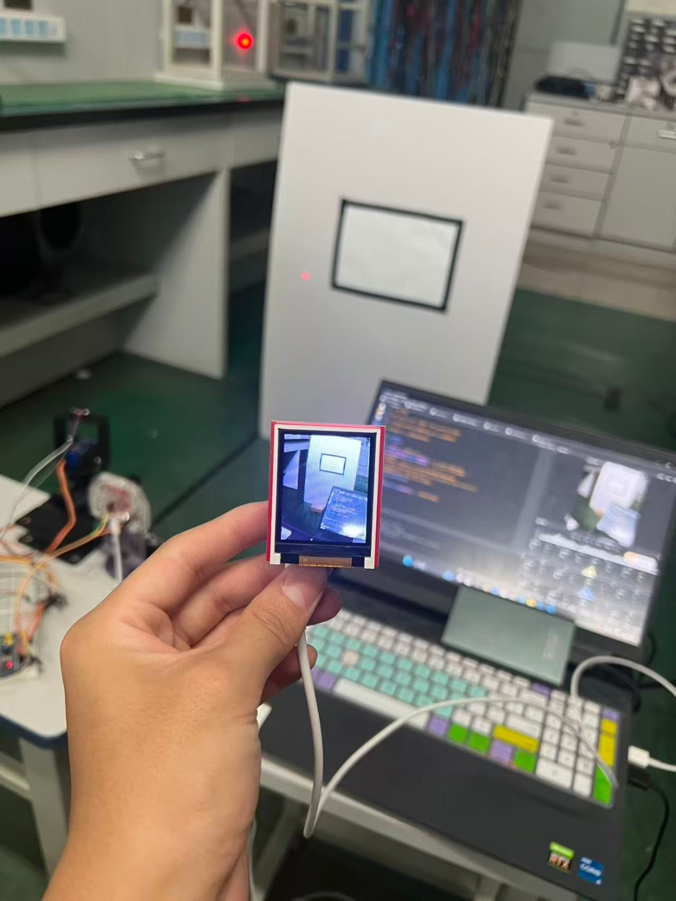
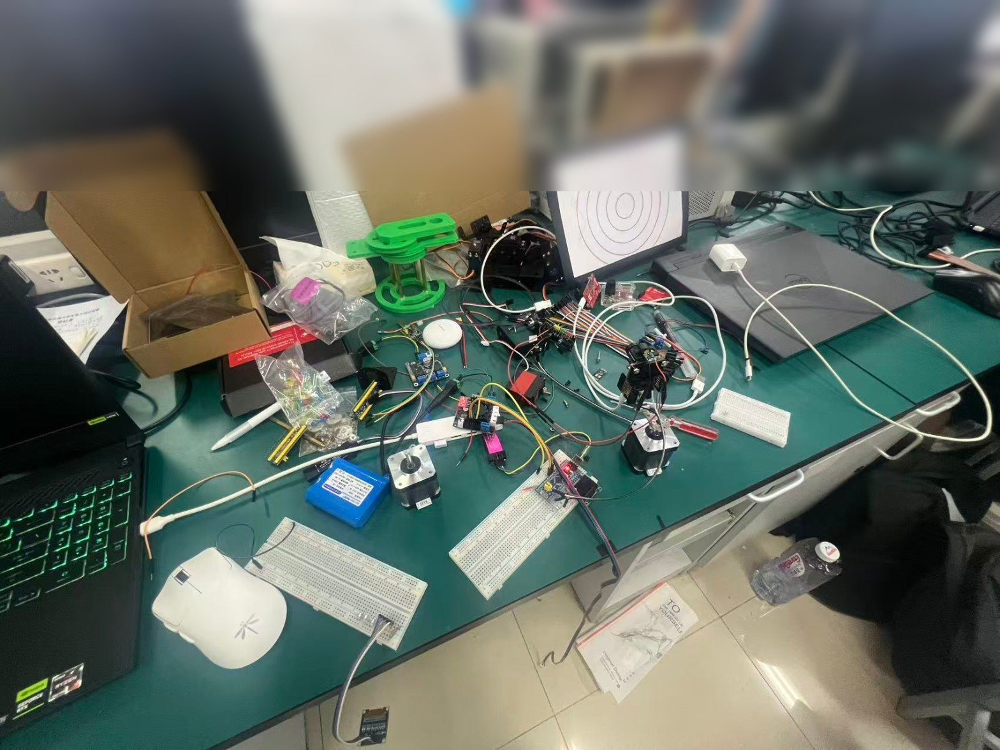
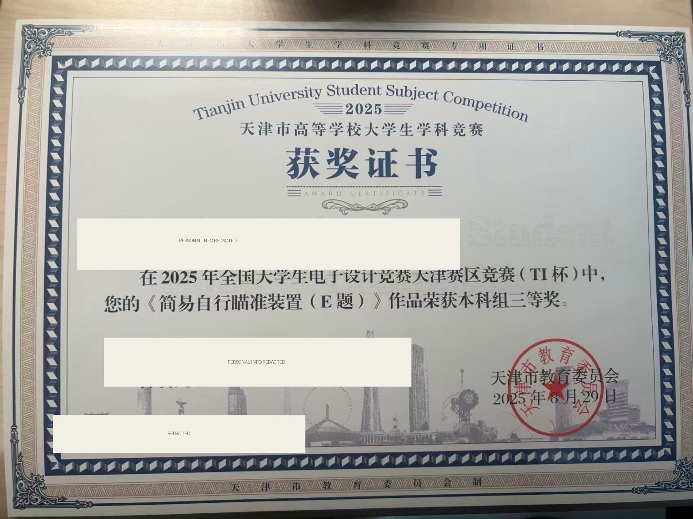
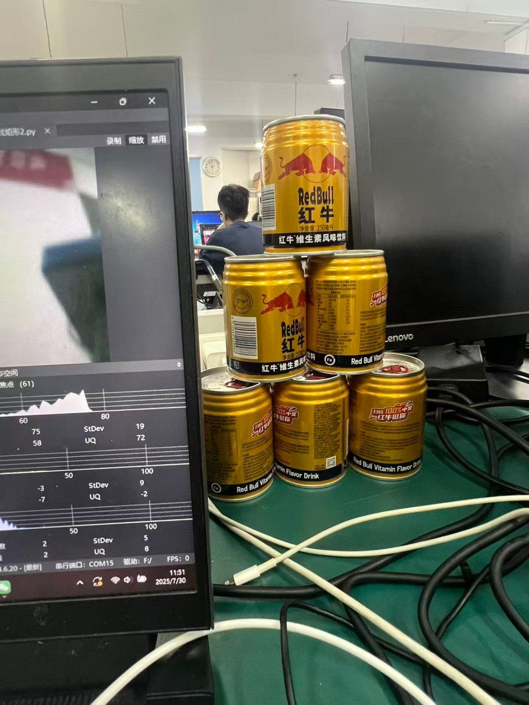
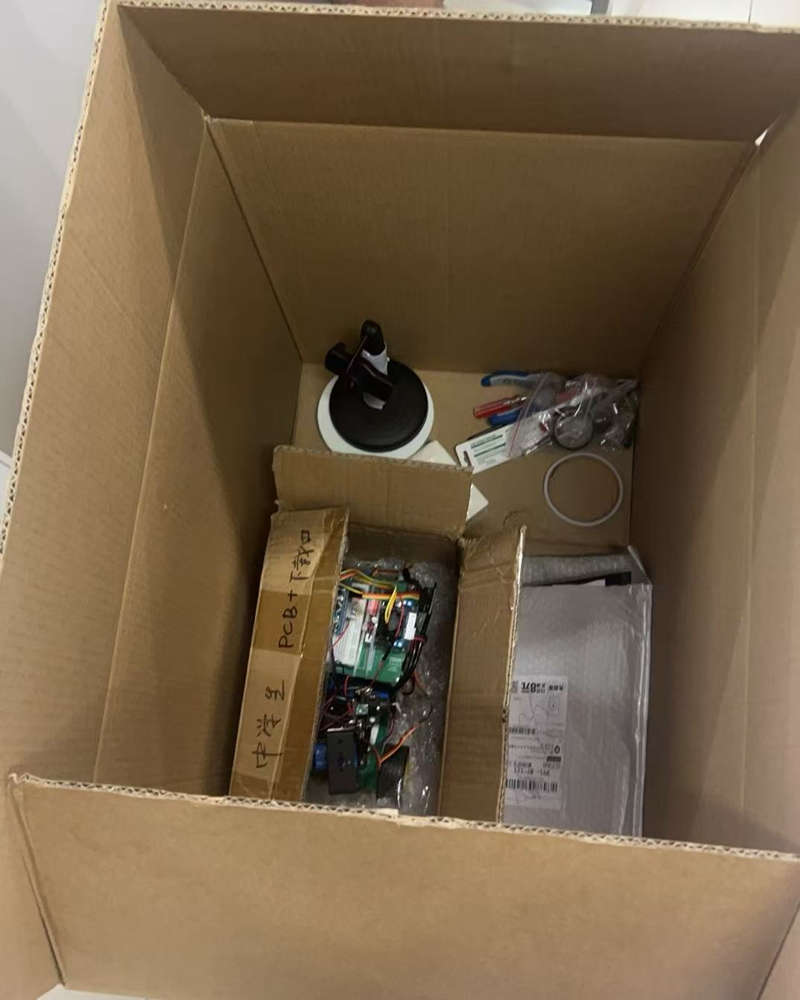

PUBLIC PROJECT REPORT / 2025
简易自行
瞄准装置。
2025 年全国大学生电子设计竞赛 E 题
本报告根据团队原始设计报告重新整理，仅用于个人网站项目记录。已移除队员姓名、指导老师、证书编号、学校等非必要身份信息，也不公开代码仓库。
01 / ABSTRACT
让一个移动系统
看见并瞄准目标。
本项目设计并实现了一套由自动寻迹小车和瞄准模块组成的简易自行瞄准装置。小车沿预设黑色轨迹行驶，搭载的 OpenMV 视觉模块识别目标靶位置，STM32 根据视觉坐标计算误差并控制二维云台，使激光光斑落到靶心。
项目的核心不是某一个单独模块，而是视觉识别、串口通信、运动控制和机械结构之间的协同。
02 / SYSTEM
系统组成
移动平台MSPM0G3507、五路灰度传感器、电机与驱动模块
视觉模块OpenMV4 H7 Plus、摄像头、MicroPython
控制模块STM32、UART 通信、PID 控制
执行机构水平步进电机、竖直舵机、二维云台、激光笔
自动寻迹小车轨迹跟踪
→OpenMV目标识别
→STM32误差计算
→二维云台激光瞄准
03 / VISION
OpenMV 视觉识别
目标靶四周使用黑色胶带形成矩形边框。OpenMV 采集图像后，对图像进行预处理，再根据矩形特征筛选目标并计算靶心。
01图像采集获取目标靶画面
02预处理灰度化与降噪
03特征提取边缘与轮廓检测
04目标筛选面积、长宽比和矩形拟合
05坐标输出对角线交点得到靶心


04 / CONTROL
从坐标到动作
OpenMV 通过 UART 将目标靶中心坐标发送给 STM32。STM32 根据目标位置和当前光斑位置计算误差，并通过 PID 算法输出云台控制量。
目标位置 − 当前光斑位置= 位置误差 e(t)P 响应当前误差 · I 减小稳态误差 · D 预测误差变化趋势
水平轴使用步进电机以获得较大的旋转范围，竖直轴使用舵机进行角度调节。视觉模块负责定位，主控负责控制，二者共同形成闭环。
05 / TESTING
测试结果
自动寻迹可设置 1～5 圈，单圈时间小于 20 秒完成
独立瞄准2 秒内完成瞄准，光斑距靶心 D1 ≤ 2 cm完成
车载瞄准4 秒内完成瞄准，光斑距靶心 D1 ≤ 2 cm完成
发挥部分进一步提升系统表现效果不理想
团队报告结论：基本功能完成较好，系统整体基本达到设计要求；发挥部分仍有较大的优化空间。
06 / REFLECTION
项目带来的理解
这个项目让我更具体地理解了嵌入式系统中的模块协作：视觉识别结果必须通过可靠的通信协议传给控制器，控制器再结合 PID 和机械执行机构完成真实动作。识别稳定性、串口数据、控制参数和机械误差中的任何一环，都会影响最终效果。
我主要负责 OpenMV 视觉识别，同时了解并参与了自动寻迹、云台控制和系统联调。这个经历也成为我继续探索嵌入式、后端和 AI 工程的一个起点。


